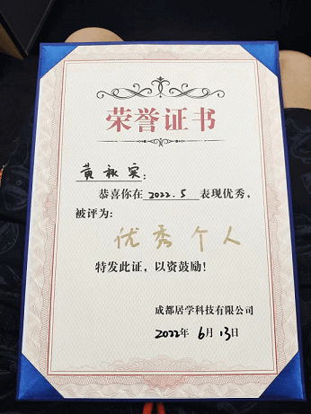

教育经历
-
-
2012 - 2015专科
- 成都东软学院 软件工程
专业技能
- Web前端
- HTML/CSS
-
使用语义化的
HTML 标签对搜索引擎更加友好。
-
模块化的
CSS（BEM）可以让
CSS 也变得更加可读。
-
使用
flex
布局可以更加方便的实现水平垂直居中/平均分布等常见的布局。
-
使用过了 Stylus / Sass /
Less 等
CSS预处理器，可以让我在写CSS的时候能够写出更加复杂的逻辑。
- JavaScript
-
熟悉原生 JavaScript ，能够熟练使用
JQuery / aHooks /
lodash
等库快速完成前端页面制作。
-
使用
ES6 语法编写更加简洁的代码。
-
熟练掌握 promise 以及
async / await 等异步编程模式。
- 框架
-
熟练掌握
React
以及相关技术栈（React /
React-Native /
React-Router /
React-Navigation /
Antd Design
等）。
-
熟练掌握
Vue 以及相关技术栈（Vue /
Vuex / Vue-Router /
Element-ui 等）。
-
熟练掌握React /
Vue状态管理工具Mobx /
Pinia / Redux。
-
熟练使用Next.js /
Nuxt.js 框架服务器渲染
SSR 解决方案。
- 小程序
-
能熟练地使用原生小程序框架进行开发，以及
Taro / Uniapp 框架开发。
-
也尝试过使用 minUi / zanUi /
weiUi
这些更漂亮美观ui框架去美化小程序。
-
熟练使用 mp-vue /
wepy 小程序框架。
- 其他
-
熟悉百度的 E-Charts /
在公交项目中曾接入过百度 /
高德等第三方地图工具。
-
熟悉
Webpack 和 Vite
打包工具，能编写
node
脚本，玩过AutoJS自动化脚本。
-
熟练掌握
Canvas
的知识并且有诸多实践经验。
-
使用
cypress
对封装的通用代码快速做单元测试。
- Web后端
- NodeJs
- 编写Node脚本来实现自动化任务，例如20年尝试在自己的Docker中运行Node脚本，赚了很多 “京豆”。
-
使用Node写过一个demo的
RESTful 风格的api。
- 接入过Node-OpenAI大模型
- Python
- 了解Python3.0语法，以及一些常用库包的使用
-
可以写简单的
爬虫 娱乐，获取一些合法公开的数据
-
开发过操作 excel /
word
等文档的py功能模块，创建过用于便捷生成
i18n 多语言的文档功能
-
可以进行简单的 数据清洗 /
数据筛查
- Java
- 启蒙的编程语言，非常的熟悉。
- 曾经用Java折腾过很多小工具，不过在接触python之后，确实显得效率不太快捷。
工作经历
-
-
2021.5 - 至今
成都居学科技有限公司 (3年+)
- 前端开发+小程序开发+NodeJS后端
-
-
2017.2 - 2021.5
四川聚云付科技有限公司 (4年)
- 前端开发+小程序开发+Java开发
-
2015.6 - 2017.2
成都天府通金融..有限公司 (1年)
- Java研发工程师
自我介绍
- 我目前在公司的职责
-
负责公司日常任务活动的开发、H5动画效果开发、根据版本需求改造会员服务体系，也会兼做一部分后端的逻辑开发，为了降低多项目之间学习成本，主要是侧重于
Javascript 体系的 Node 环境
-
负责开发基础组件以提高公司内部的开发效率，参与复杂需求的设计和开发
-
负责对新技术进行调研，推动公司内部技术栈的更新，带过团队也制定过代码规范
- 我的优势
-
工作踏实认真，很少跳槽，更倾向于稳定，有完整的技术路线和多个从0到1的经历，也有多个百万用户级别的产品开发与维护经验。
-
具有自我驱动力，自主的去学习新技术，渴望成长为
全栈 路线的技术大牛。
-
对AI大模型比较熟悉，有接入过
OpenAI 相关业务场景的开发经验。

- 业余时间
-
关注掘金、StackOverFlow、V2ex等技术社区，了解前后端发展动向，会去尝试折腾新鲜技术，多去学习别人的写法和思想，然后提升自我。
-
很喜欢研究稀奇古怪的技术，日常中有维护自己以Python为基础建立
Quant交易系统
，尝试对数据进行清洗、分析、复盘，然后找出其中的规律，我觉得挺有意思。

- 使用 JS + Canvas 写的K线图，用于配合数据结果很方便地查看历史K线数据。
项目经验
-
- 2023.11 - 至今团队主导
-
妙飞会员服务 (微信公众号H5)
-
妙飞日常活动服务 (React)
- 媒资管理平台 (Vue)
- 视频云上传平台 (React)
- TVapk官网 (Next.js)
-
Vue
React
Next.js
HTML5
TypeScript
Tailwind CSS
CSS3
-
- 主导推动团队工具包开发与维护落地。
-
负责百万级日活项目的迭代开发，重大节假日付费活动的开发，多端适配，优化交互体验，减少用户支付路径和提升支付转换率。
-
后期接手的业务线和需要并行开发的需求变得越来越多且复杂，框架不同，将部分通用的组件例如
Table， Image，
Download，多语言等功能模块全部模块化，以配置替代开发，降低自身开发成本，将复杂页面从1天降低为2小时内完成。
-
主导对官网进行SEO优化，对官网主页面结构进行重构，保留简洁描述性强的URL结构，对图片文件进行CDN缓存且添加ALT标签，用
Schema.org
标记为Google搜索引擎提供网页丰富结构化信息，减少JS重定向，
最终转化率提升了 25%。
-
使用lighthouse工具分析网站，且使用Chrome性能优化工具
DevTools
调试页面，让网站性能指数LCP、FCP、CLS指数优化到85分以上。首屏打开耗时从
平均6秒 到
平均3秒 以内。
-
- 2022.8 - 2023.11团队主导
-
爱家-人工智能家庭咨询师 (Taro)
-
OpenAI大模型Node服务端 (Node +
Nginx)
-
AIGC-Promote管理平台
(基于Eletron框架)
-
Taro-react
Next.js
Canvas
HTML5
TypeScript
Node.js
SEO优化
i18n
-
-
负责项目
AIGC
从0到1的基础搭建和开发规范制定，通过TypeScript和ESlint规则约束改善代码的⼀致性和可维护性，确保项⽬从最初的构建到稳定运⾏的全过程都
质量可控
-
构建
WebSocket
即时通信聊天室核心模块，优化上百人在交流群内参与话题讨论的实时性能与稳定性无重大卡顿的情况发生
-
添加业务中间层逻辑，结合Mobx实现数据状态管理，针对Axios进行二次封装，降低因网络问题等GPT数据未正常获取到而导致的白屏故障率从
30% 下降至到 2%。
-
基于Python文件处理，将Excel数据翻译为i18n可用类型，并使用i18next实现多语言翻译的
无缝切换。
-
针对没有符合产品需求的开源组件的情况，尽量使用自定义
Canvas
绘制复杂组件图形的⽅式解决此类问题，使用
gpu.js
提升JS运算速度，最⼤程度还原产品设计，并确保组件的性能、可靠性和可维护性达到产品要求，解决手机端、平板端、网页端等多种平台上展示的适配问题。
-
主导AIGC-Promote管理平台桌面端基于React的
Eletron框架
开发，使用Webpack，Rollup打包构建桌面项目。
-
- 2022.1 - 2022.8团队协作
- 健康早餐计划(小程序)
- 电视家会员服务(小程序)
-
Taro-react
Tailwind CSS
promise
canvas
-
-
负责早餐项目从0到1的基础搭建，完成早餐小程序菜单列表无缝滚动，解决在多图多样式情况下菜单滑动卡顿错误问题，复盘后统计性能提升
60%。
-
对项目代码进行瘦身及配置层面的优化，剔除无用的项目依赖、组件、代码来
优化打包速度和体积，将平台平均构建速度从 65s 降低至
28s，页面渲染速度从
3.2s 下降至 1.7s。
-
项目中使用Mobx作为数据状态管理机制，使用
TailWindcss
原子化管理CSS语义声明提升开发效率且降低维护成本
-
- 2021.5 - 2022.1团队协作
-
电视家节假日活动开发(H5动画)
- 电视家公众号H5会员服务
-
JQuery
Html5
canvas
-
-
负责百万级日活项目的迭代开发，基于原生JQuery与Html5，参与春节翻牌献礼、欧洲杯娱乐竞猜，世界杯会员福利等多项活动主要流程的开发，以及复杂
H5动画 效果展示。
-
采用多方案降低性能损耗，其中包括使用
懒加载 和渲染
防抖节流
来提升页面加载速度和性能响应，
-
使用素材数据CDN缓存、压缩、资源静态化以及插件包本地解压等方案降低宽带资源的耗损
-
线上活动 0 重大事故
，为电视盒子系统构建通用JavaScript原生组件库、工具包，提升开发效率的同时降低BUG风险率。
-
梳理业务逻辑并重构网络请求模块逻辑，活动期间数百万用户访问时，高频调用接口的重复访问次数率下降
70% ，获得项目团队一致好评，荣获
季度明星员工 称号。
-
- 2020.3 - 2021.5团队主导
- 云众包税筹平台（vue）
- 云众包支付平台（vue）
-
vue
less
flexible
better-scroll
element-ui
-
- 使用 HTML5 、CSS3 和 weiui，完成布局
- 使用 JQuery 挖成页面的交互
- 调用微信的支付接口、分享接口
- 功能完备的h5商城，微运营系统
-
- 2019.6 - 2020.4团队协作
-
智慧校园自动化线上支付服务
(Vue)
-
vue
less
flexible
better-scroll
-
-
对应用进行性能分析和优化，包括资源加载、渲染优化和代码压缩，以提升应用的响应速度和运行效率。
-
接入公司自建支付平台与第三方支付平台的支付功能，打通前端支付链路。
-
协作开发内嵌H5商城系统模块，完成商品与渠道数据的对应。
-
- 2017.2 - 2019.6团队协作
-
聚云付线上支付系统 (Java)
-
SpringBoot
Python
-
-
处理支付系统日常逻辑开发，与第三方支付（支付宝、微信支付）集成，实现多种聚合支付。
-
开发与维护 OAuth 、JWT
等安全协议模块，保护用户线上支付安全
-
使用MySQL进行数据库设计和优化，确保数据完整性与安全性，提升系统性能
-
- 2018.5 - 2019.3团队主导
-
天府通NFC芯片过闸通信模块
-
Android
Java NIO
-
-
使用
Java NIO
实现NFC芯片过闸通信模块，实现芯片与后台服务器的通信。
-
实现芯片集ISO-8859数据通信，完成数据的校验、解析、封装、发送、接收、解析、校验、处理等功能。